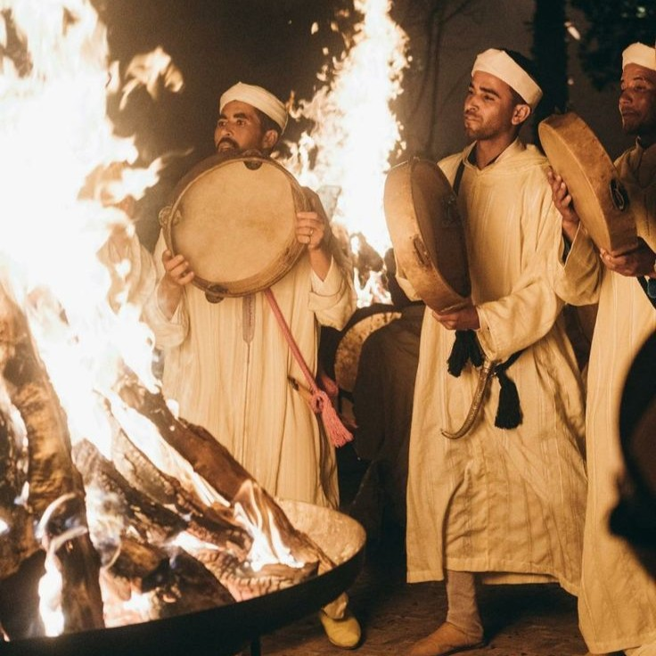
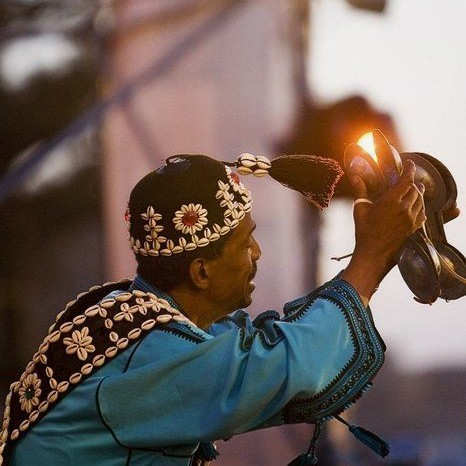
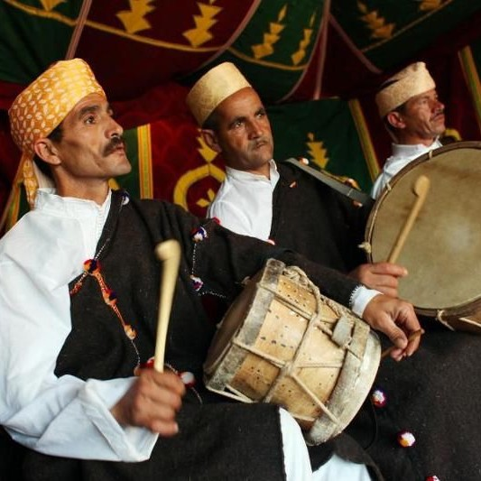
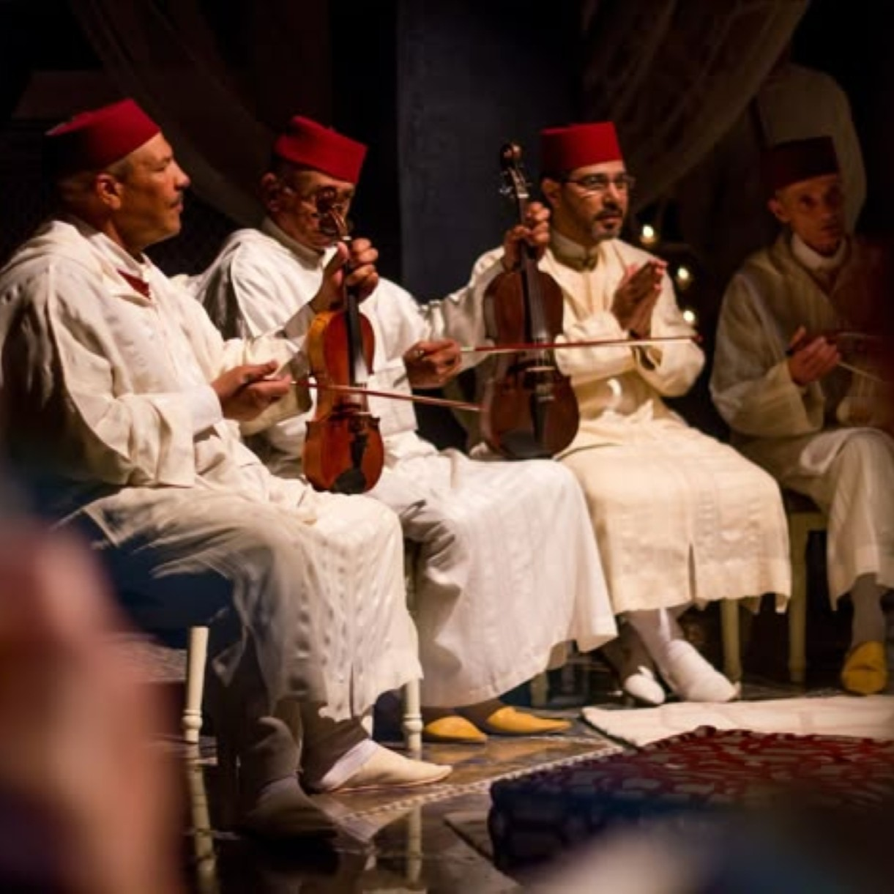

MUSIC
Explorez la musique marocaine, reflet de la diversité culturelle du pays à travers ses rythmes, ses chants et ses traditions ancestrales.


Ahidous
Musique amazighe rythmée avec chants collectifs et percussions traditionnelles.

Gnawa
Musique spirituelle marocaine aux rythmes profonds et chants de transe

Taqtouqa Jebliya
Musique populaire du nord du Maroc aux mélodies vives et festives

Tarab Andalou
Musique andalouse raffinée mêlant poésie, élégance et tradition..